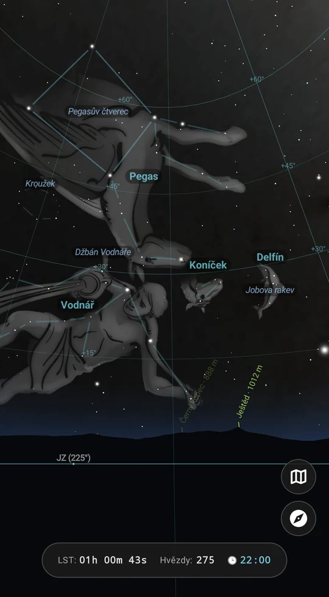
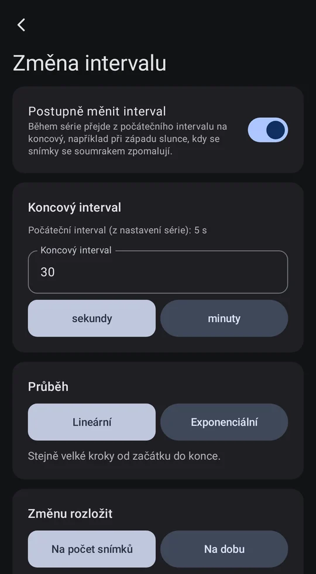
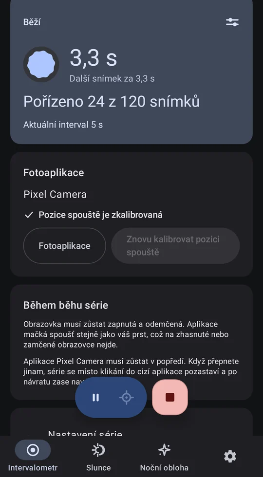
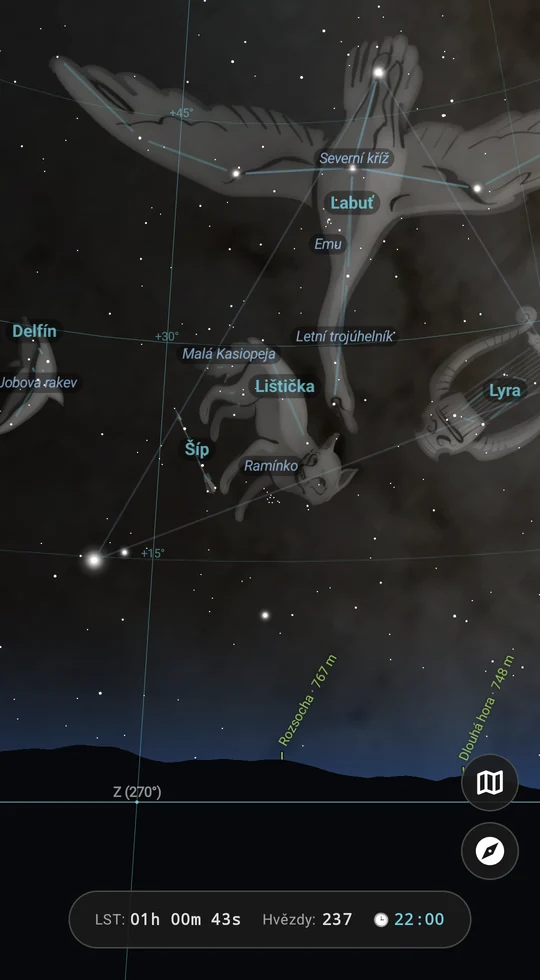
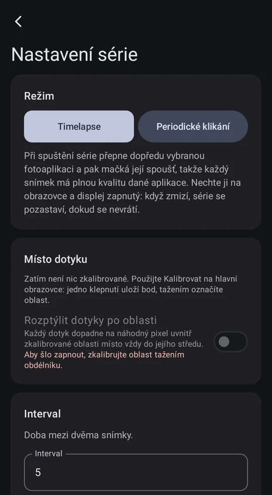

Časosběr bez kompromisů
CAELIS mačká spoušť přímo ve vaší aplikaci fotoaparátu, takže každý snímek projde HDR+, nočním i astro režimem telefonu.
VíceIntervalometr a plánovač oblohy pro Android
Časosběr, který fotí váš vlastní fotoaparát se vším, co umí – a Slunce, Měsíc a hvězdy nakreslené nad skutečnou krajinou.
Zdarma · Bez reklam · Android 11+

Tři nástroje, jedna aplikace
CAELIS mačká spoušť přímo ve vaší aplikaci fotoaparátu, takže každý snímek projde HDR+, nočním i astro režimem telefonu.
VíceJejich dráha přímo v obraze kamery, s časovými značkami, zlatou hodinou a soumraky – vůči skutečnému horizontu z modelu terénu.
VíceHvězdy, planety, Měsíc a Mléčná dráha nad skutečnou krajinou, s východy a západy počítanými vůči skutečným kopcům.
VíceČasosběr



Slunce a Měsíc v AR
Noční obloha v AR

Jak to funguje
Google Camera nebo jakoukoli jinou. CAELIS ji při startu série otevře sám.
Jedním klepnutím označíte tlačítko spouště. Pozice se pro danou aplikaci zapamatuje.
Interval, počet snímků, ramping a podmínky zastavení – a pak telefon na stativ.

Soukromí na prvním místě
Internet slouží jen ke stažení terénu a názvů vrcholů. Odesílá se pouze název mapového čtverce 1° × 1° – nikdy souřadnice.
Volitelné Google ARCore dělá AR stabilnější. Než ho zapnete, aplikace vám řekne, co Google dostává.
Jen aby otevřela zvolenou aplikaci fotoaparátu a stiskla v ní spoušť, nebo klepla na bod, který jste nastavili. Nic z toho, co vidí, neukládá ani neodesílá. AR moduly ji nepotřebují.
Celá aplikace je zveřejněná pod licencí GPL-3.0. Přečtěte si ji, sestavte, ověřte.
Snímky obrazovky
Zdarma na Google Play. Vyžaduje Android 11 nebo novější.